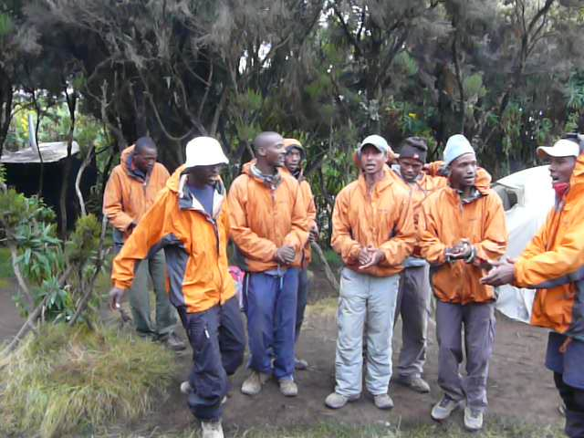

Videos
Internet in Africa is so slow that it is impossible to upload the videos
for now, but here is a list of some of the things that we have filmed.
- 
- Kilimanjaro song performed by Duma Explorer
- Baboons at Bantu Lodge
- Samburu women dancing and singing
- Samburu kids singing
- Giraffe walking (Samburu)
- Truckride during the Softpower activity
- Kingfisher fishing on Source of Nile
- Silverback Guhonda attacking his long-time human friend, guide Francois
- Twa people dancing and singing
- Masai men dancing and singing
- Masai women dancing and singing
- Masai men making fire
- Cheetah planning an attack on zebra/gnu (Masai Mara)
- Buffalo crossing the road (Ngorongoro crater)
- Driving through Arusha
- Red colobus monkeys (Jozani forest)
- Lion family walking close to a truck (South Luangwa)
- Elephant by a tree (South Luangwa)
- ...
Last update:
2009-10-09 Cape Town Airport International Departures, Cape Town.